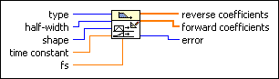

Smoothing Filter Coefficients VI
Owning Palette: Advanced IIR Filtering VIs
Requires: Full Development System
Designs filter coefficients for a smoothing filter. You can use this VI to design a moving-average FIR filter or an exponentially-averaging IIR filter.
The VI returns reverse coefficients and forward coefficients for direct connection to the IIR Filter VI, which is used to implement both FIR and IIR filters.

 Add to the block diagram Add to the block diagram |
 Find on the palette Find on the palette |